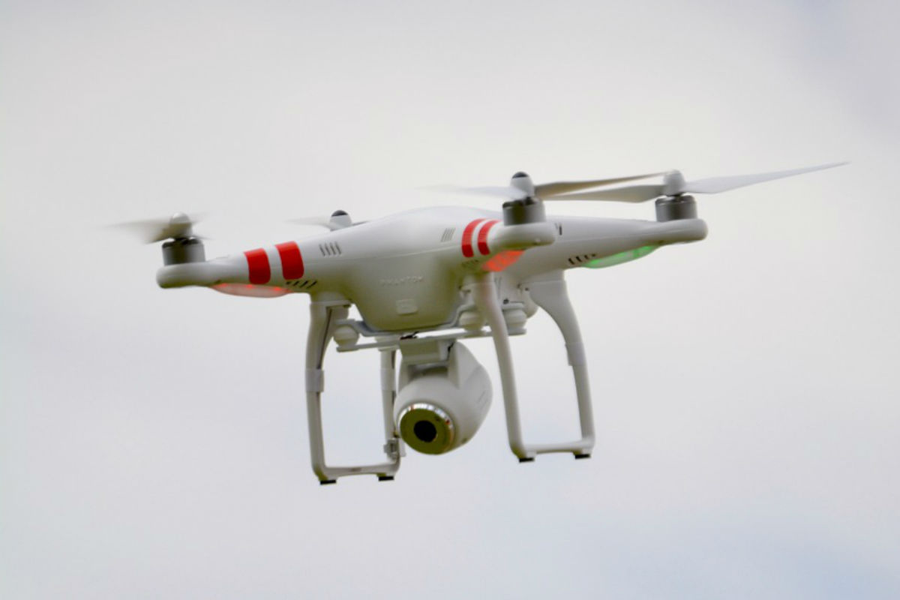
MaterialsDrones are generally made with light composite materials. This reduces the weight and increases the manoeuvrability. The composites are specifically chosen so that they will absorb vibration and thus reduce noise production. |
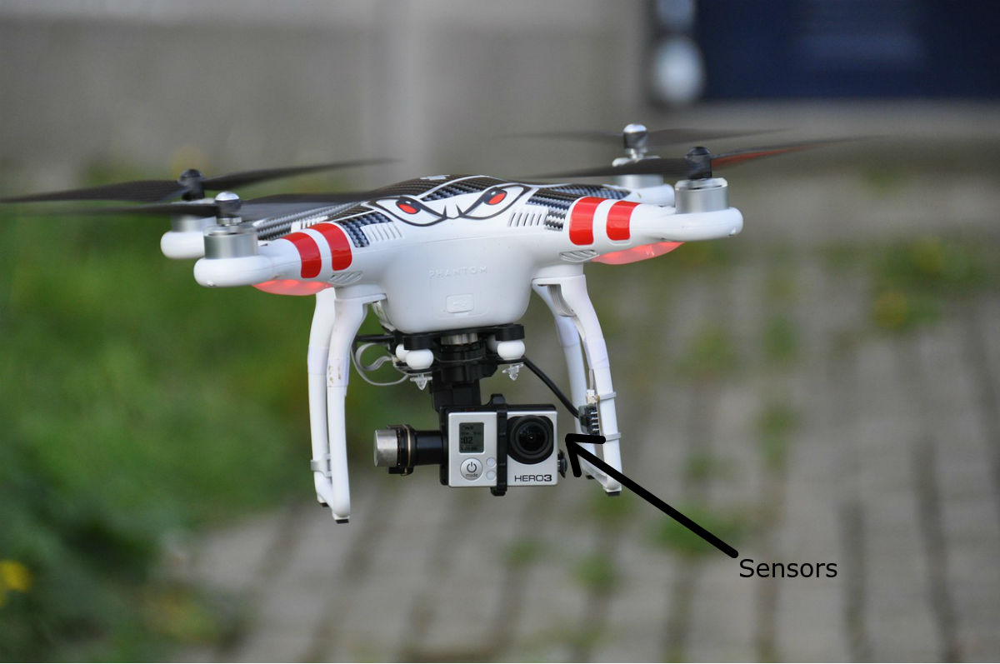
SensorsAlmost any kind of sensor can be attached to a drone, including cameras, GPS, and thermometers. These sensors and navigational systems are usually placed at the nose of the drone. |
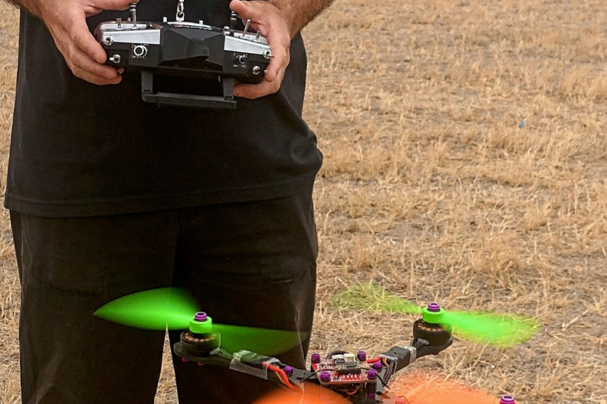
ControllerUAVs are always controlled by a ground controller. This sends signals up to the drone, directing its actions. |
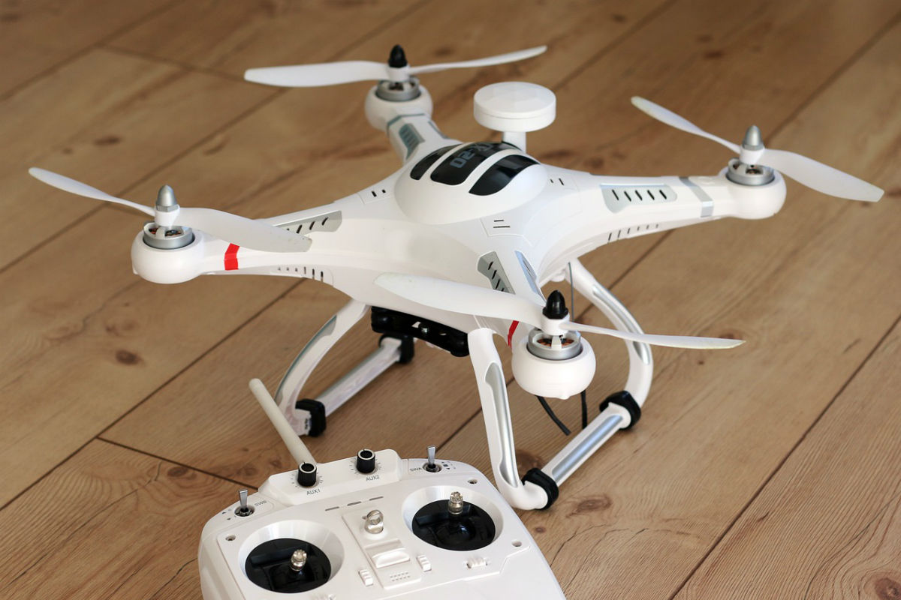
PropellerStandard Prop :This is described as a “tractor” propeller in which the propellers pull the quadcopter through the air like a tracor. These props are always at the front of the drone. |
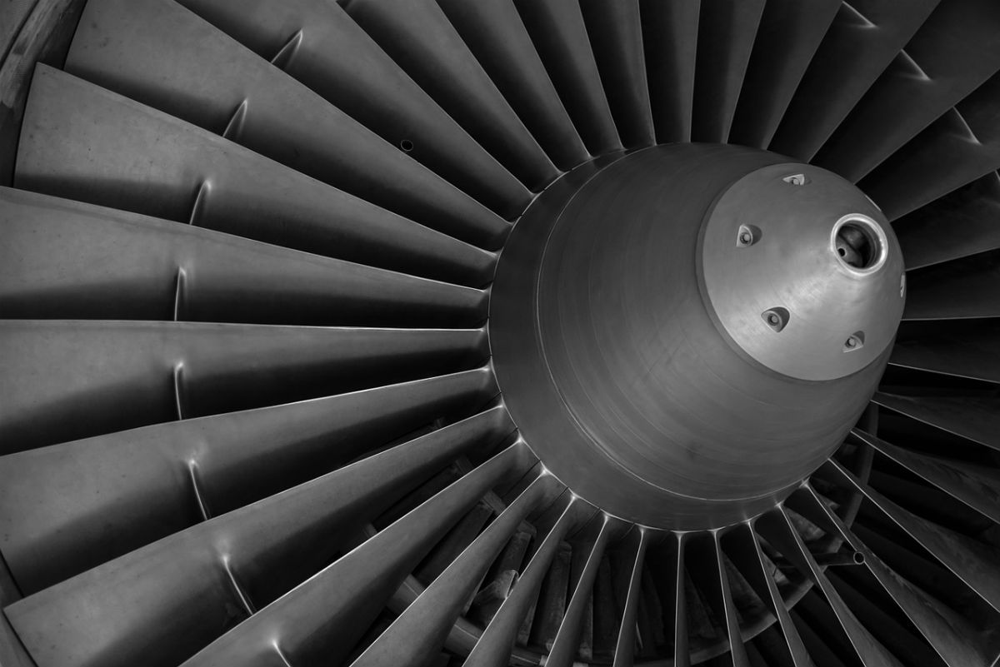
Motor & Motor MountAlmost all new drones use a brushless motor. It is more efficient, reliable, and quieter than a brushed motor. |
Landing GearSome drones need high ground clearance and use helicopter-style skids that are mounted directly to the body. Other drones omit the landing gear. However, the majority of drones have fixed landing gears which can be either retractable or irretractable. |
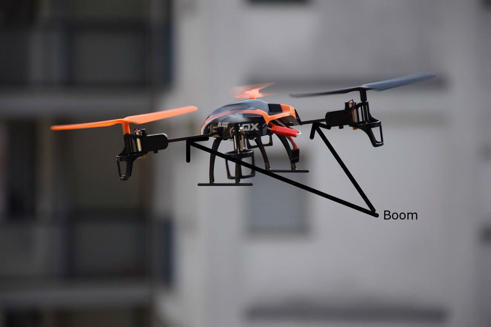
BoomThe boom connects the drone propellers to the main body. The shorter the boom, the more maneuverability, but the longer the boom, the more stability. The boom can be part of the drone’s body or a separate part. The boom is made of a very strong material so the drone may withstand a crash. |
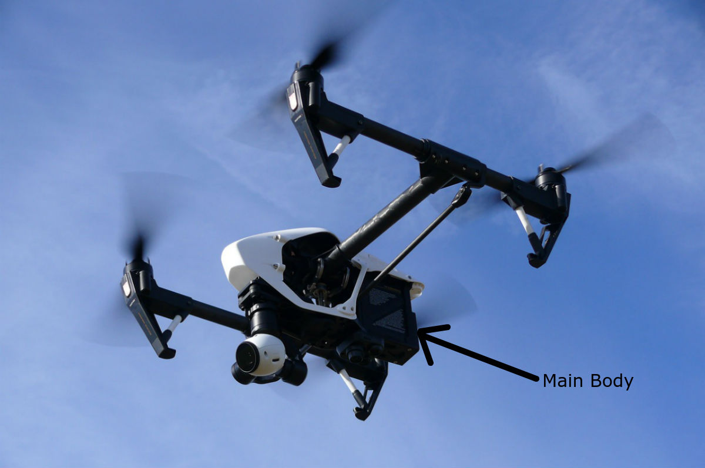
Main BodyThe main body is the central part of the plane from where all of the booms radiate. It is also where the battery, main boards, processors avionics, cameras, and sensors are located. It can also act as a dynamic brake, and is used to convert DC power into AC for brushless motors. |
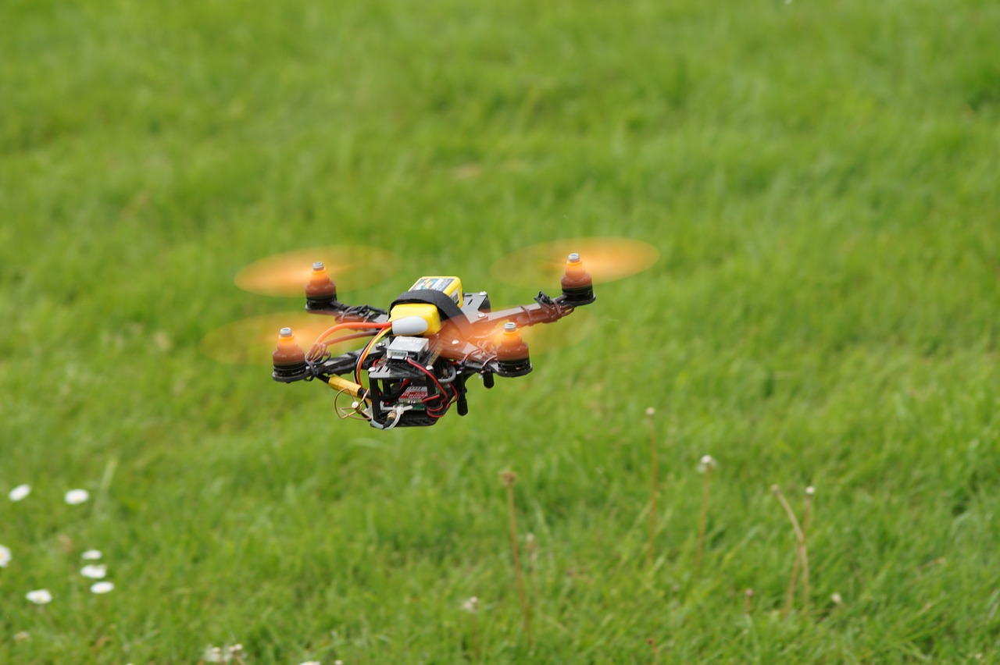
Electronic Speed Controllers (ESC)The ESC is an electronic circuit that varies the speed and direction of the electric motor. |
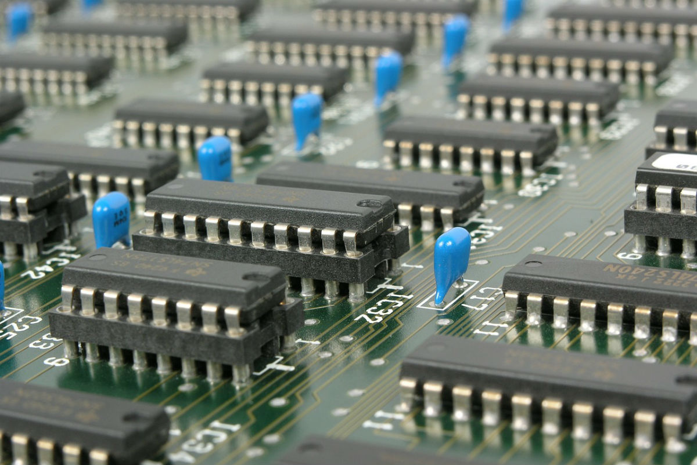
Flight ControllerThe Flight Controller is a small chip that is used to interpret input from the GPS module, receiver, battery monitor, and onboard sensors. It regulates motor speeds using the ESC to provide steering. It can also trigger cameras, control autopilot and other autonomous functions. |
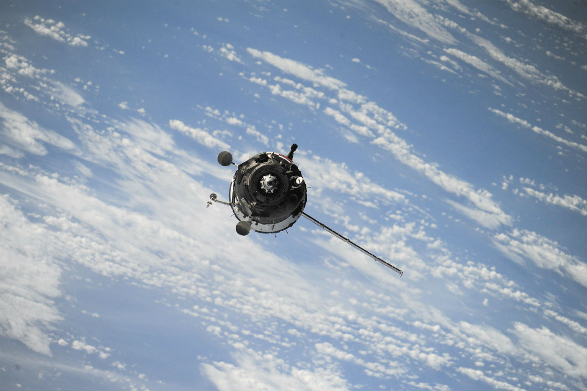
Global Positioning System (GPS)The GPS provides the user with the drone’s longitude, latitude, elevation and compass heading, allowing the user to accurately control the drone and giving the option of autonomous flights. |
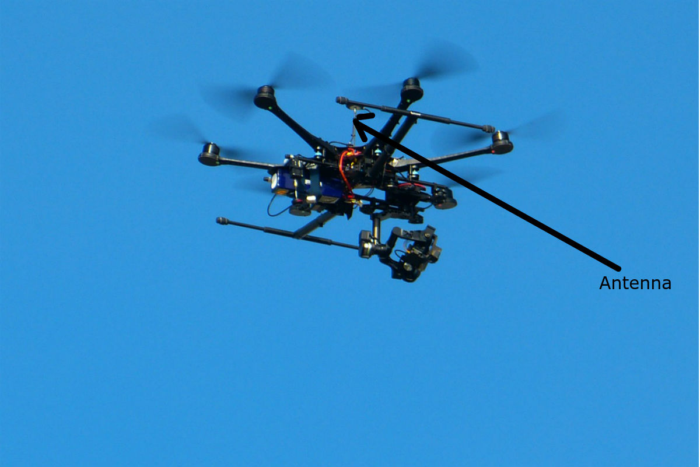
Antenna & ReceiverThe antenna is either a loose wire whip or a helical shape. This directs the messages received from control to the receiver. The receiver gets messages from the control system, allowing the controller to give the drone directions. |
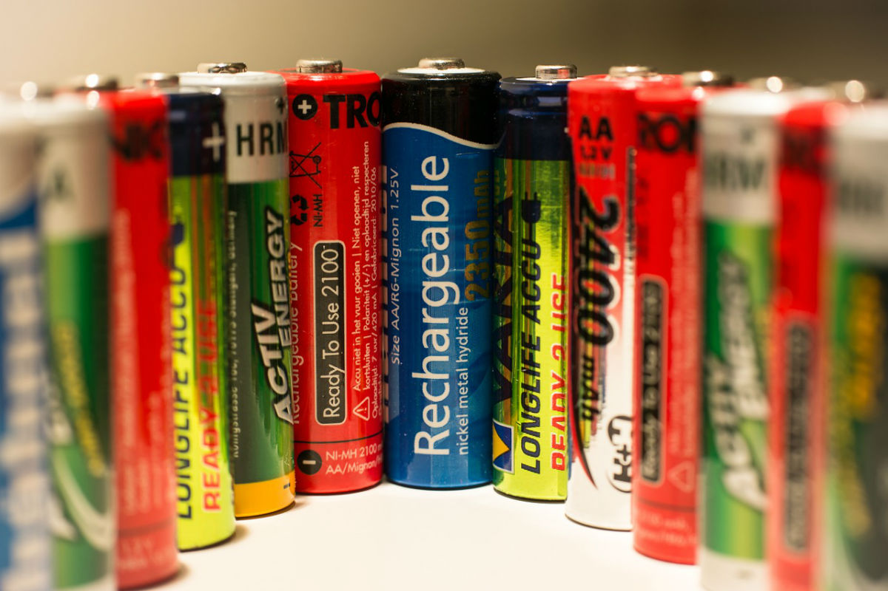
Battery & Battery MonitorThe battery is usually a Lithium polymer (LiPo). This is because LiPo batteries offer the best combination of power density, lifetime, and energy density. The battery monitor allows the drone user to track the drone’s power level during flight. |
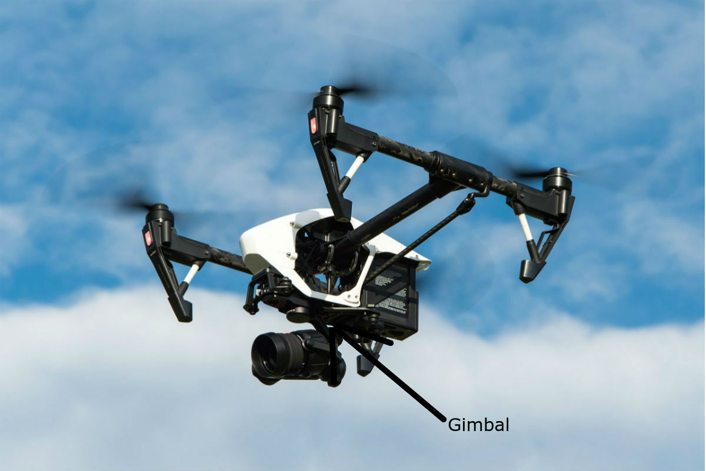
Gimbal & RelatedThe gimbal is a pivoting mount that is able to rotate about 1, 2, or 3 axis. It provides stabilization and can point cameras and other sensors. This is controlled by a gimbal motor and its controller. |
SoftwareSoftware is the code that allows the drones to do everything. Without it, it would be impossible to fly and control the drone, take pictures, and any other functions. |
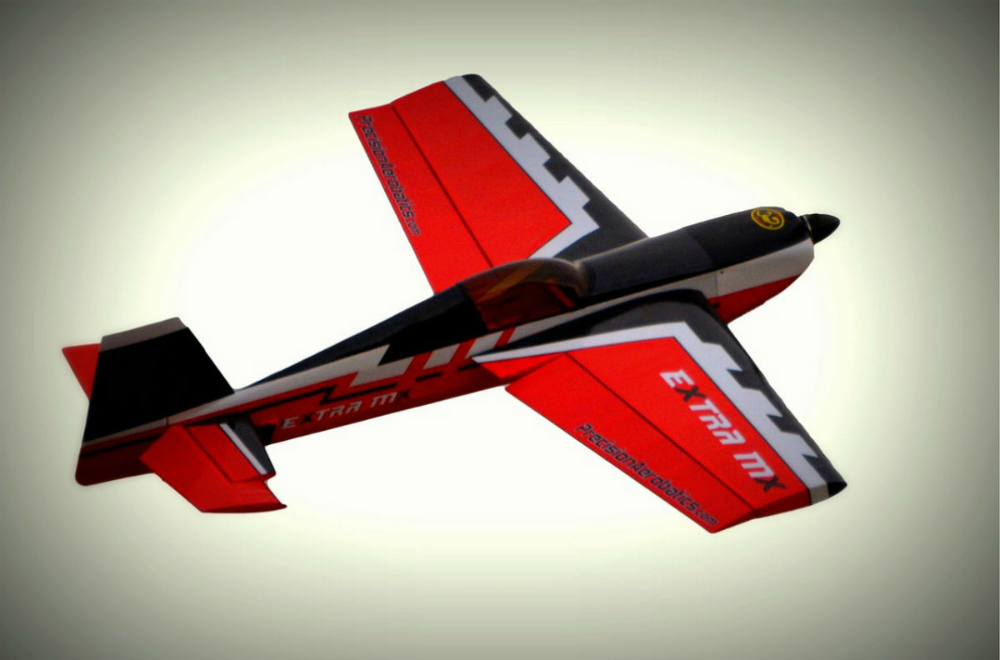
Fixed WingsFixed wing drones look like commercial airplanes. Compared to rotary wing drones, fixed wings have better aerodynamics, allowing for longer flights at higher speeds. This makes fixed wing drones optimal for aerial survey. On the downside, fixed wing drones require a launcher or a runway for takeoff and landing. |
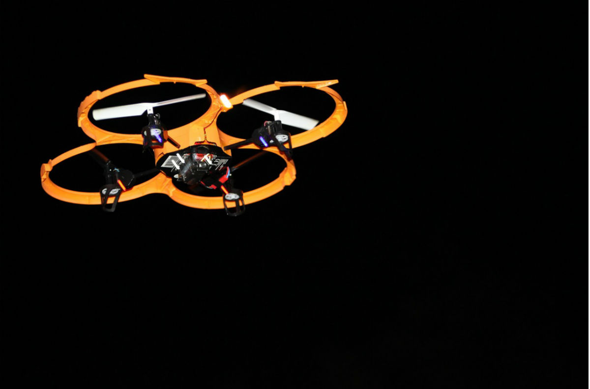
Rotary WingsRotary wing drones have shorter flight ranges and lower speeds due to their complexity. As they take off vertically, however, and they don’t need a runway or launcher. They also are better at agile maneuvering and hovering. For these reasons, rotary wing drones are best for things like facility inspections. |